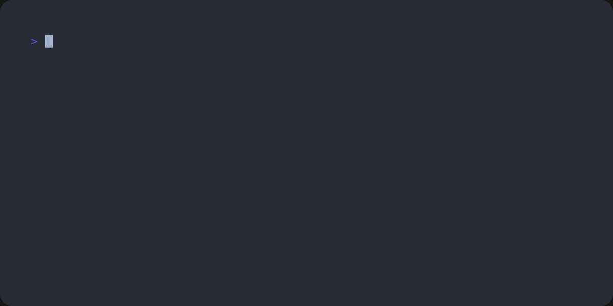
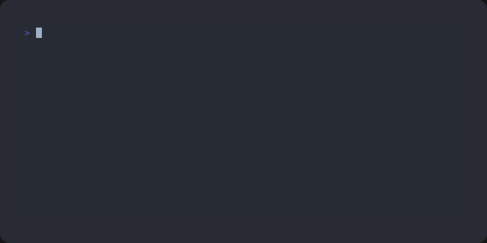

Widget
Basic blocks for building interactive elements.
This is a low-level API module, upon which yuio.io builds
its higher-level abstraction.
Widget basics
All widgets are are derived from the Widget class, where they implement
event handlers, layout and rendering routines. Specifically,
Widget.layout() and Widget.draw() are required to implement
a widget.
- class yuio.widget.Widget[source]
Base class for all interactive console elements.
Widgets are displayed with their
digraph G { node [ width=2; fixedsize=true; ]; start [ label=""; shape=doublecircle; width=0.3; ]; layout [ label="Widget.layout()"; shape=rect; ]; draw [ label="Widget.draw()"; shape=rect; ]; wait [ label="<wait for keyboard event>"; shape=plain; fixedsize=false; ]; event [ label="Widget.event()"; shape=rect; ]; stop [ label="Result(...)?"; shape=diamond; ]; end [ label=""; shape=doublecircle; width=0.3; ]; start -> layout; layout -> draw; draw -> wait [ arrowhead=none ]; wait -> event; event -> stop; stop:e -> layout:e [ weight=0; taillabel="no" ]; stop -> end [ taillabel="yes" ]; }run()method. They always go through the same event loop:Widgets run indefinitely until they stop themselves and return a value. For example,
Inputwill return when user presses Enter. When widget needs to stop, it can return theResult()class from its event handler.For typing purposes,
Widgetis generic. That is,Widget[T]returns T from itsrun()method. So,Input, for example, isWidget[str].Some widgets are
Widget[Never](seetyping.Never), indicating that they don’t ever stop. Others areWidget[None], indicating that they stop, but don’t return a value.- event(e: KeyboardEvent, /) Result[T_co] | None[source]
Handle incoming keyboard event.
By default, this function dispatches event to handlers registered via
bind(). If no handler is found, it callsdefault_event_handler().
- default_event_handler(e: KeyboardEvent, /) Result[T_co] | None[source]
Process any event that wasn’t caught by other event handlers.
- abstract layout(rc: RenderContext, /) Tuple[int, int][source]
Prepare widget for drawing, and recalculate its dimensions according to new frame dimensions.
Yuio’s widgets always take all available width. They should return their minimum height that they will definitely take, and their maximum height that they can potentially take.
- abstract draw(rc: RenderContext, /)[source]
Draw the widget.
Render context’s drawing frame dimensions are guaranteed to be between the minimum and the maximum height returned from the last call to
layout().
- with_title(title: str | Color | Iterable[Color | str] | ColorizedString, /) Widget[T_co][source]
Return this widget with a title added before it.
- with_help() Widget[T_co][source]
Return this widget with a
help_widget()added after it.
- property help_widget: Help
Help widget that you can show in your
render()method to display available hotkeys and actions.You can control contents of the help message by overriding
help_columns.
- property help_columns: List[List[str | Tuple[Key | KeyboardEvent | str | List[Key | KeyboardEvent | str], str]]]
Columns for the
Helpwidget.By default, columns are generated using docstrings from all event handlers that were registered using
bind().You can control this process by decorating your handlers with
help_column().You can also override this property to provide custom help data. Use
Help.combine_columns()to add onto the default value:class MyWidget(Widget): @functools.cached_property def help_columns(self) -> _t.List[Help.Column]: # Add an item to the first column. return Help.combine_columns( super().help_columns, [ [ ([], "start typing to filter values"), ], ], )
- class yuio.widget.Result(value: T_co)[source]
Result of a widget run.
We have to wrap the return value of event processors into this class. Otherwise we won’t be able to distinguish between returning None as result of a
Widget[None], and not returning anything.- value: T_co
Result of a widget run.
- yuio.widget.bind(key: Key | str, *, ctrl: bool = False, alt: bool = False, show_in_help: bool = True) Callable[[T], T][source]
Register an event handler for a widget.
Widget’s methods can be registered as handlers for keyboard events. When a new event comes in, it is checked to match arguments of this decorator. If there is a match, the decorated method is called instead of the
Widget.default_event_handler().If show_in_help is
False, this binding will be hidden in the automatically generated help message.Example:
class MyWidget(Widget): @bind(Key.ENTER) def enter(self): # all `ENTER` events go here. ... def default_event_handler(self, e: KeyboardEvent): # all non-`ENTER` events go here (including `ALT+ENTER`). ...
- yuio.widget.help_column(column: int, /) Callable[[T], T][source]
Set index of help column for a bound event handler.
This decorator controls automatic generation of help messages for a widget. Specifically, it controls column in which an item will be placed, allowing to stack multiple event handlers together. All bound event handlers that don’t have an explicit column index will end up after the elements that do.
Example:
class MyWidget(Widget): @bind(Key.ENTER) @help_column(1) def enter(self): """help message""" ...
- class yuio.widget.Key(value, names=<not given>, *values, module=None, qualname=None, type=None, start=1, boundary=None)[source]
Non-character keys.
- ENTER = 1
Enter key.
- ESCAPE = 2
Escape key.
- DELETE = 3
Delete key.
- BACKSPACE = 4
Backspace key.
- TAB = 5
Tab key.
- SHIFT_TAB = 6
Tab key with Shift modifier.
- HOME = 7
Home key.
- END = 8
End key.
- PAGE_UP = 9
PageUp key.
- PAGE_DOWN = 10
PageDown key.
- ARROW_UP = 11
ArrowUp key.
- ARROW_DOWN = 12
ArrowDown key.
- ARROW_LEFT = 13
ArrowLeft key.
- ARROW_RIGHT = 14
ArrowRight key.
Drawing and rendering widgets
Widgets are rendered through RenderContext. It provides simple facilities
to print characters on screen and manipulate screen cursor.
- class yuio.widget.RenderContext(term: Term, theme: Theme, /)[source]
A canvas onto which widgets render themselves.
This class represents a canvas with size equal to the available space on the terminal. Like a real terminal, it has a character grid and a virtual cursor that can be moved around freely.
Before each render, context’s canvas is cleared, and then widgets print themselves onto it. When render ends, context compares new canvas with what’s been rendered previously, and then updates those parts of the real terminal’s grid that changed between renders.
This approach allows simplifying widgets (they don’t have to track changes and do conditional screen updates themselves), while still minimizing the amount of data that’s sent between the program and the terminal. It is especially helpful with rendering larger widgets over ssh.
- frame(x: int, y: int, /, *, width: int | None = None, height: int | None = None)[source]
Override drawing frame.
Widgets are always drawn in the frame’s top-left corner, and they can take the entire frame size.
The idea is that, if you want to draw a widget at specific coordinates, you make a frame and draw the widget inside said frame.
When new frame is created, cursor’s position and color are reset. When frame is dropped, they are restored. Therefore, drawing widgets in a frame will not affect current drawing state.
Example:
>>> rc = RenderContext(term, theme) >>> rc.prepare() >>> # By default, our frame is located at (0, 0)... >>> rc.write("+") >>> # ...and spans the entire canvas. >>> print(rc.width, rc.height) 20 5 >>> # Let's write something at (4, 0). >>> rc.set_pos(4, 0) >>> rc.write("Hello, world!") >>> # Now we set our drawing frame to be at (2, 2). >>> with rc.frame(2, 2): ... # Out current pos was reset to the frame's top-left corner, ... # which is now (2, 2). ... rc.write("+") ... ... # Frame dimensions were automatically reduced. ... print(rc.width, rc.height) ... ... # Set pos and all other functions work relative ... # to the current frame, so writing at (4, 0) ... # in the current frame will result in text at (6, 2). ... rc.set_pos(4, 0) ... rc.write("Hello, world!") 18 3 >>> rc.render() + Hello, world! + Hello, world!
Usually you don’t have to think about frames. If you want to stack multiple widgets one on top of another, simply use
VerticalLayout. In cases where it’s not enough though, you’ll have to calllayout()for each of the nested widgets, and then manually create frames and executedraw()methods:class MyWidget(Widget): # Let's say we want to print a text indented by four spaces, # and limit its with by 15. And we also want to print a small # un-indented heading before it. def __init__(self): # This is the text we'll print. self._nested_widget = Text( "very long paragraph which " "potentially can span multiple lines" ) def layout(self, rc: RenderContext) -> _t.Tuple[int, int]: # The text will be placed at (4, 1), and we'll also limit # its width. So we'll reflect those constrains # by arranging a drawing frame. with rc.frame(4, 1, width=min(rc.width - 4, 15)): min_h, max_h = self._nested_widget.layout(rc) # Our own widget will take as much space as the nested text, # plus one line for our heading. return min_h + 1, max_h + 1 def draw(self, rc: RenderContext): # Print a small heading. rc.set_color_path("bold") rc.write("Small heading") # And draw our nested widget, controlling its position # via a frame. with rc.frame(4, 1, width=min(rc.width - 4, 15)): self._nested_widget.draw(rc)
- set_final_pos(x: int, y: int, /)[source]
Set position where the cursor should end up after everything has been rendered.
By default, cursor will end up at the beginning of the last line. Components such as
Inputcan modify this behavior and move the cursor into the correct position.
- write(text: str | Color | Iterable[Color | str] | ColorizedString, /, *, max_width: int | None = None)[source]
Write string at the current position using the current color. Move cursor while printing.
While the displayed text will not be clipped at frame’s borders, its width can be limited by passing max_width. Note that
rc.write(text, max_width)is not the same asrc.write(text[:max_width]), because the later case doesn’t account for double-width characters.All whitespace characters in the text, including tabs and newlines, will be treated as single spaces. If you need to print multiline text, use
yuio.term.ColorizedString.wrap()andwrite_text().Example:
>>> rc = RenderContext(term, theme) >>> rc.prepare() >>> rc.write("Hello, world!") >>> rc.new_line() >>> rc.write("Hello,\nworld!") >>> rc.new_line() >>> rc.write( ... "Hello, 🌍!<this text will be clipped>", ... max_width=10 ... ) >>> rc.new_line() >>> rc.write( ... "Hello, 🌍!<this text will be clipped>"[:10] ... ) >>> rc.new_line() >>> rc.render() Hello, world! Hello, world! Hello, 🌍! Hello, 🌍!<
Notice that
'\n'on the second line was replaced with a space. Notice also that the last line wasn’t properly clipped.
- write_text(lines: Iterable[str | Color | Iterable[Color | str] | ColorizedString], /, *, max_width: int | None = None)[source]
Write multiple lines.
Each line is printed using
write(), so newline characters and tabs within each line are replaced with spaces. Useyuio.term.ColorizedString.wrap()to properly handle them.After each line, the cursor is moved one line down, and back to its original horizontal position.
Example:
>>> rc = RenderContext(term, theme) >>> rc.prepare() >>> # Cursor is at (0, 0). >>> rc.write("+ > ") >>> # First line is printed at the cursor's position. >>> # All consequent lines are horizontally aligned with first line. >>> rc.write_text(["Hello,", "world!"]) >>> # Cursor is at the last line. >>> rc.write("+") >>> rc.render() + > Hello, world!+
Stacking widgets together
To get help with drawing multiple widgets and setting their own frames,
you can use the VerticalLayout class:
- class yuio.widget.VerticalLayout(*widgets: Widget[object])[source]
Helper class for stacking widgets together.
You can stack your widgets together, then calculate their layout and draw them all at once.
You can use this class as a helper component inside your own widgets, or you can use it as a standalone widget. See
VerticalLayoutBuilderfor an example.- event(e: KeyboardEvent) Result[T] | None[source]
Dispatch event to the widget that was added with
receive_events=True.See
VerticalLayoutBuilderfor details.
- draw(rc: RenderContext, /)[source]
Draw the stack according to the calculated layout and available height.
- class yuio.widget.VerticalLayoutBuilder[source]
Builder for
VerticalLayoutthat allows for precise control of keyboard events.By default,
VerticalLayoutdoes not handle incoming keyboard events. However, you can createVerticalLayoutthat forwards all keyboard events to a particular widget within the stack:widget = VerticalLayout.builder() \ .add(Line("Enter something:")) \ .add(Input(), receive_events=True) \ .build() result = widget.run(term, theme)
- add(widget: Widget[Any], /, *, receive_events=False) Any[source]
Add a new widget to the bottom of the layout.
If receive_events is True, all incoming events will be forwarded to the added widget. Only the latest widget added with
receive_events=Truewill receive events.This method does not mutate the builder, but instead returns a new one. Use it with method chaining.
Pre-defined widgets
- class yuio.widget.Line(text: str | Color | Iterable[Color | str] | ColorizedString, /, *, color: Color | str | None = None)[source]
A widget that prints a single line of text.
- class yuio.widget.Text(text: str | Color | Iterable[Color | str] | ColorizedString, /, *, color: Color | str | None = None)[source]
A widget that prints wrapped text.
- class yuio.widget.Input(*, text: str = '', placeholder: str = '', decoration: str = '>', allow_multiline: bool = False)[source]
An input box.
{kind=link}
- class yuio.widget.Choice(options: List[Option[T]], /, *, decoration: str = '>', default_index: int | None = 0)[source]
Allows choosing from pre-defined options.

{kind=link}
- class yuio.widget.Option(value: T_co, display_text: str, display_text_prefix: str = '', display_text_suffix: str = '', comment: str | None = None, color_tag: str | None = None)[source]
An option for the
Choicewidget.
- class yuio.widget.InputWithCompletion(completer: Completer, /, *, placeholder: str = '', decoration: str = '>', completion_item_decoration: str = '>')[source]
An input box with tab completion.
{kind=link}
- class yuio.widget.FilterableChoice(options: ~typing.List[~yuio.widget.Option[~yuio.widget.T]], /, *, mapper: ~typing.Callable[[~yuio.widget.Option[~yuio.widget.T]], str] = <function FilterableChoice.<lambda>>, filter: ~typing.Callable[[~yuio.widget.Option[~yuio.widget.T], str], bool] | None = None, default_index: int = 0)[source]
Allows choosing from pre-defined options, with search functionality.
- class yuio.widget.Map(inner: Widget[U], fn: Callable[[U], T], /)[source]
A wrapper that maps result of the given widget using the given function.
Example:
>>> # Run `Input` widget, then parse user input as `int`. >>> int_input = Map(Input(), int) >>> int_input.run(term, theme) 10
- class yuio.widget.Apply(inner: Widget[T], fn: Callable[[T], None], /)[source]
A wrapper that applies the given function to the result of a wrapped widget.
Example:
>>> # Run `Input` widget, then print its output before returning >>> print_output = Apply(Input(), print) >>> result = print_output.run(term, theme) foobar! >>> result 'foobar!'
- class yuio.widget.Help(columns: Collection[List[str | Tuple[Key | KeyboardEvent | str | List[Key | KeyboardEvent | str], str]]], /)[source]
Displays help messages.

- ActionKey
A single key associated with an action. Can be either a hotkey or a string with an arbitrary description.
alias of
Union[Key,KeyboardEvent,str]
- ActionKeys
A list of keys associated with an action.
alias of
Union[Help.ActionKey,List[Help.ActionKey]]
- Action
An action itself, i.e. a set of hotkeys and a description for them.
alias of
Union[str,Tuple[Help.ActionKeys,str]]
- Column
A single column of actions.
alias of
List[Help.Action]
- layout(rc: RenderContext, /) Tuple[int, int][source]
Prepare widget for drawing, and recalculate its dimensions according to new frame dimensions.
Yuio’s widgets always take all available width. They should return their minimum height that they will definitely take, and their maximum height that they can potentially take.
- draw(rc: RenderContext, /)[source]
Draw the widget.
Render context’s drawing frame dimensions are guaranteed to be between the minimum and the maximum height returned from the last call to
layout().
- static combine_columns(*columns: List[List[str | Tuple[Key | KeyboardEvent | str | List[Key | KeyboardEvent | str], str]]]) List[List[str | Tuple[Key | KeyboardEvent | str | List[Key | KeyboardEvent | str], str]]][source]
Given multiple column lists, stack column contents on top of each other.
Example:
>>> Help.combine_columns( ... [["a1"], ["b1"]], ... [["a2"], ["b2"], ["c2"]], ... ) [['a1', 'a2'], ['b1', 'b2'], ['c2']]
{kind=link}